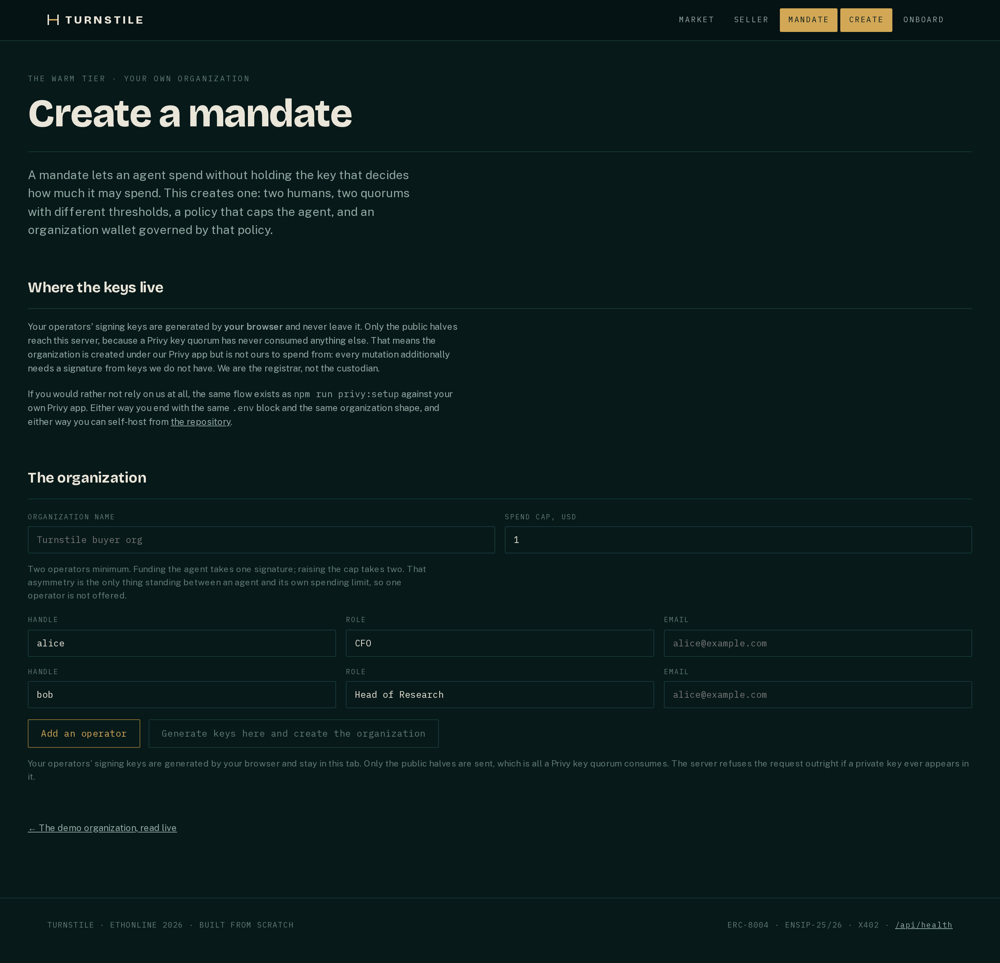
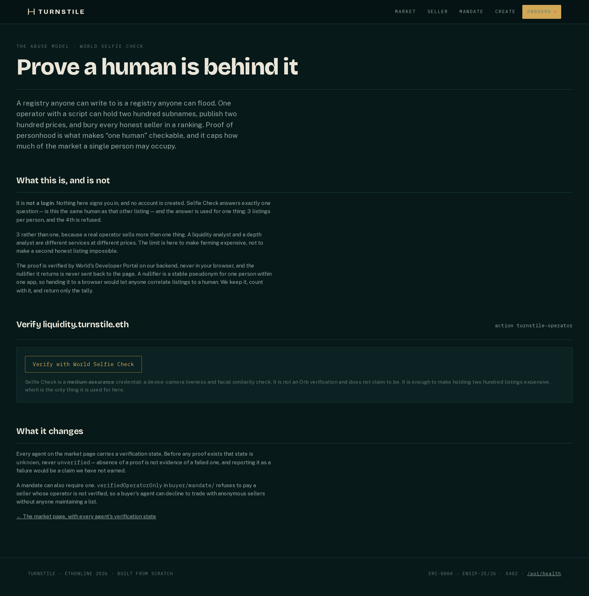

Bring it up
$ git clone https://github.com/IpastorSan/turnstile
$ cd turnstile
$ cp .envrc.example .envrc # then fill in SEPOLIA_RPC_URL
$ cd deploy
$ docker compose up --build # then open http://localhost
The compose file is deploy/compose.yaml, not the repo root.
Secrets come from the repo-root .env — the same file
every npm script reads, so there is exactly one place credentials live.
Four services behind one hostname, because
the ENS record commits us to one: agent-endpoint[mcp]
publishes a URL, and a buyer’s agent reads that record and nothing
else. Caddy routes /analyze/* and /receipts/* to
the seller service, /evidence/* to the CRE evidence server,
and everything else to the web app.
The routes are listed explicitly rather than as a catch-all, so a path
nobody serves gets an honest 404 from the web app instead of a confusing
error from the seller.
Going live is the same command with one variable changed
(TURNSTILE_SITE_ADDRESS) and a DNS record pointed at the box.
Without SEPOLIA_RPC_URL the seller page says so rather than
serving a cached price, and /api/health reports which of the
two data dependencies this deployment can actually reach. A page that
cannot read the chain should look broken, not confident.
The three commands
-
See the 402. The whole product in one
response: a quote a buyer can check against the posted price before
paying anything.
$ npm run serve # seller service on :4021 $ curl -i http://localhost:4021/analyze/0x88e6a0c2ddd26feeb64f039a2c41296fcb3f5640Returns
HTTP 402with aPAYMENT-REQUIREDheader and the same challenge object as the body — the header is what the protocol reads, the body is what a human withcurlsees, and a test asserts they are deep-equal. This is x402 v2, not v1’sX-PAYMENTspelling. Under compose the same route ishttp://localhost/analyze/…. -
Pay for one answer, on both rails.
Discovery, a price read from Sepolia, a 402, two settlements and one
verdict.
$ npm run demoPrints the agent’s nonce and balances before and after, so the zero-gas claim from page 04 either holds in front of you or fails visibly. Needs funded testnet credentials in
.env; without them it stops and says which one is missing. -
Check the whole repo.
$ npm run verify516 tests: 426 node, 90 Forge, 13 of them forked against live Sepolia — including the
setAddrrevert that page 03 rests on. Forge must be 1.8.1; the contracts needgit submodule update --init --recursivefirst.
Claim
Every claim in this walkthrough is reproducible from this repository, or is marked as not proven.
- Proof
-
One row per claim, one link per row, in
docs/EVIDENCE.md, including a What is not live section. - Withdrawn
-
CORRECTIONS.md— what turned out to be wrong, what replaced it, and the date. Nothing deleted from the record. - Licence
- MIT, and built from scratch at this event. The commit history shows it rather than asserting it.
Two surfaces worth opening

/mandate/new — issuing your own mandate rather than
reading ours. The operators’ signing keys are generated in the
browser and never sent: only the public halves reach the server, which is
all a Privy key quorum consumes, and the server refuses the request
outright if a private key appears in it. Two operators minimum, because
funding the agent takes one signature and raising the cap takes two, and
that asymmetry is the only thing standing between an agent and its own
spending limit.
Captured 2026-09-09.

/onboard — the abuse model. A registry anyone can
write to is a registry anyone can flood, so proof of personhood caps how
much of the market one person may occupy: three listings, and the fourth
is refused. The nullifier is verified on the backend and never returned
to the page, because a nullifier handed to a browser would let anyone
correlate listings to a human. The button does not work yet — see
below.
Captured 2026-09-09.
Not claimed
World Selfie Check is not live. No agent in this system has ever been verified, and the page above is a labelled placeholder.
- Why
- Sandbox access, the Selfie Check Beta flag and the Sandbox mobile app are all pending approvals we do not control. There is no credential to verify against.
- Consequence
-
world_verificationis empty, so every agent on the market page reportsunknown— neverunverified. Absence of a proof is not evidence of a failed one, and reporting it as a failure would be a claim we have not earned. - Scope
-
The abuse model, the three-listing cap and the
verifiedOperatorOnlymandate flag are all implemented and tested; what is missing is the credential that would populate them. Deliberately not faked.
Where the code lives
| Path | Step | What it is |
|---|---|---|
graph/substreams/ |
01 | The authored ERC-8004 agent-registry normalization module. Rust, one pipeline across four networks |
graph/sink/ |
01 | The store, plus document resolution and ENS hydration |
contracts/ |
02 | The ENSv2 name, the resolver and the ENSIP-25/26 offer records — plus the fork tests |
mcp-turnstile/ |
03 | The MCP server a buyer’s agent calls: 4 tools and a SKILL.md |
seller/service/ |
04 | The 402 flow. Names no chain, and a test fails the build if it starts to |
rails/PaymentRail.ts |
05 | The rail seam. rails/hedera-x402/ and rails/arc-usdc/ implement it |
buyer/mandate/ |
05 | Per-run mandate enforcement — the agent refuses before it pays |
seller/cre/ |
06 | The confidential workflow, the evidence server and the settlement CLI |
web/ |
01, 02 | Market, seller, mandate and onboard pages. Live reads, no cache |
That is the whole walkthrough. Six pages, six claims, and four things we said we had not proved: the hosted endpoint does not resolve, custody is not cold, the settled verdict is not DON-attested, and World verification is not live. Every one of them is somewhere a judge would eventually have found it. Putting them in the same typeface as the wins is the only version of this document worth reading.